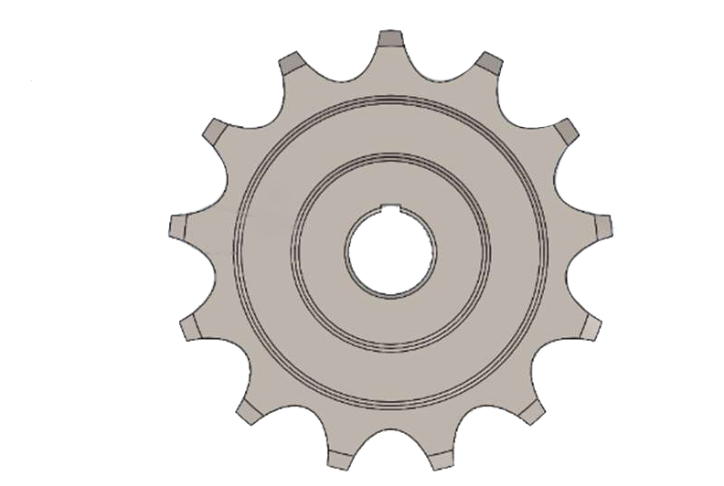
Produção de Pinhão e suporte metálico
Produção em massa de um pinhão e suporte metálico. Gestão, planeamento da produção, controle de qualidade, análise de custos. Fundição e Soldadura.

Gustavo, estudante de Engenharia Mecânica no Instituto Superior Técnico. Tem experiência em simulação de sistemas mecânicos, modelação em SolidWorks, design dinâmico, Virtual Private Servers em Linux e em diversas linguagens de programação.

Produção em massa de um pinhão e suporte metálico. Gestão, planeamento da produção, controle de qualidade, análise de custos. Fundição e Soldadura.
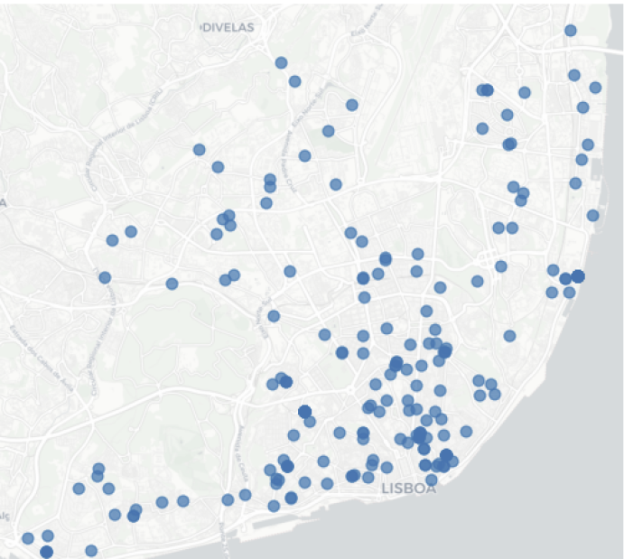
Análise preditiva de preços de imóveis na cidade de Lisboa usando vários modelos preditivos (Machine Learning).
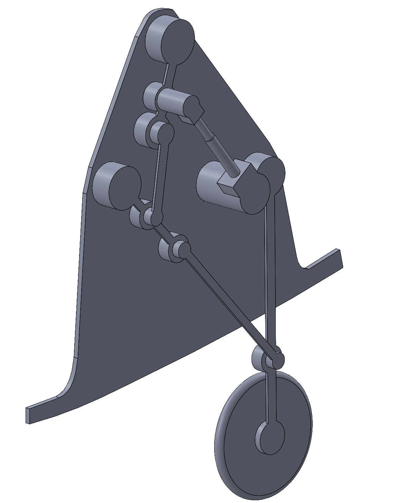
Análise cinemática, dinâmica de um sistema de aterragem de avião usando SolidWorks e MUBOKAP/MUBODAP em MATLAB.
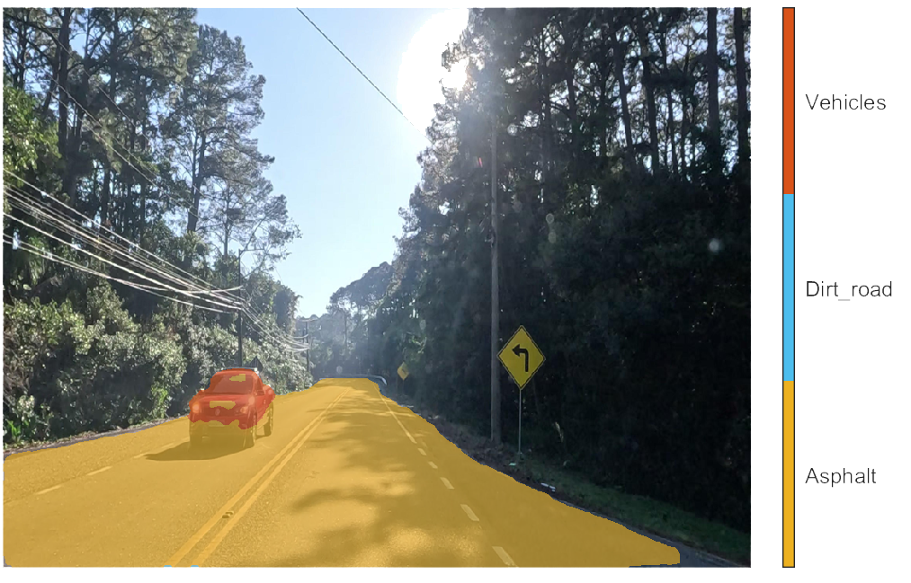
Modelo Machine Learning (CNN) com semantic segmentation treinado com imagens de estradas para deteção de obstáculos, linhas de estrada etc...
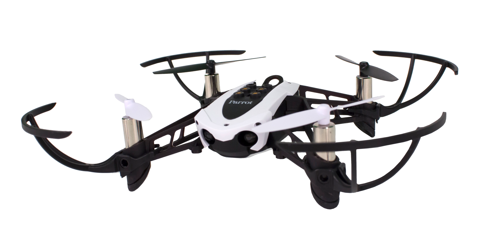
A partir de MATLAB, Simulink, simulação de trajetórias e dinâmica de um Drone e validação com Parrot Drone.
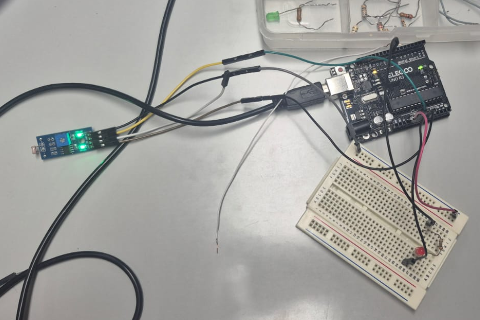
Estudo semi-profundado de sensores photoresistor e LEDs. Análise em laboratório.
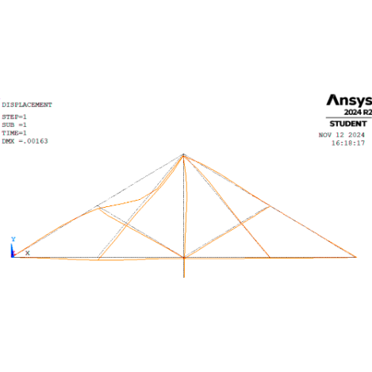
Análise de elementos finitos numa viga. Estudo de modelos 2D. Estudo de elementos finitos na deformação de vigas.
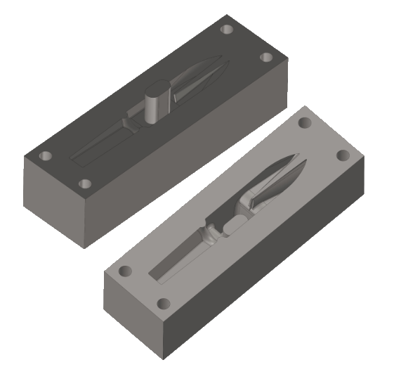
Produção unitária e em massa de cabeça de martelo de ferradura. Gestão, planeamento da produção, controle de qualidade, análise de custos. Corte por arrombamento, forjamento (matriz aberta e fechada) e maquinagem.
Prototipagem de uma palmilha inteligente com sensor de pressão e sistema de comunicação via bluetooth para análise de marcha e biomecânica. Projeto Final de Licenciatura.
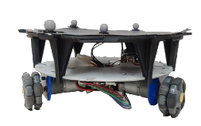
Application of modelling concepts to a three wheeled omnidirectional mobile robot. Sensors, actuators, estimation and path planning solutions.
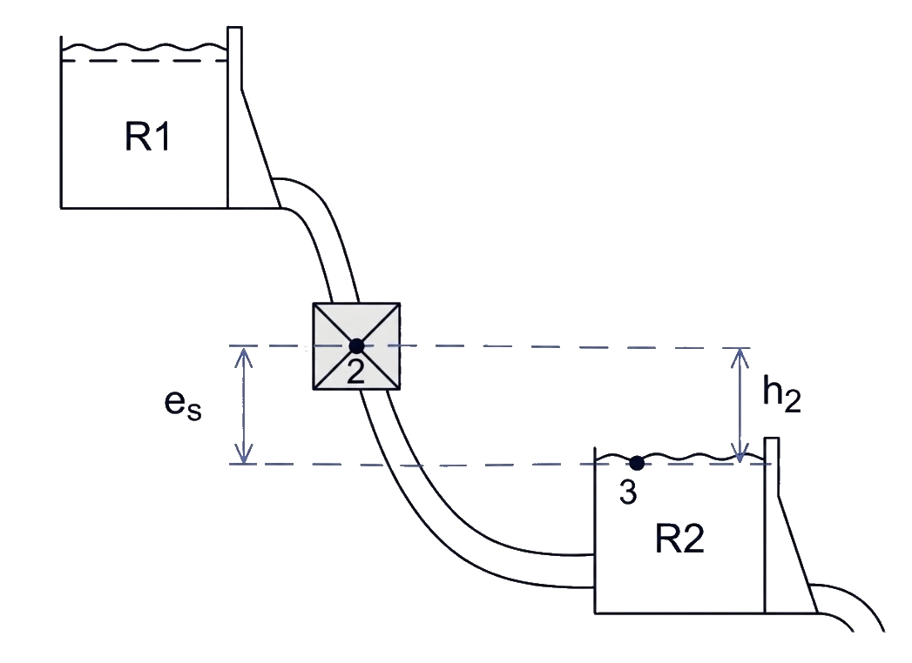
Proposta técnico-económica para a implementação de uma central hidroelétrica integrada com um parque solar e eólico já existente.
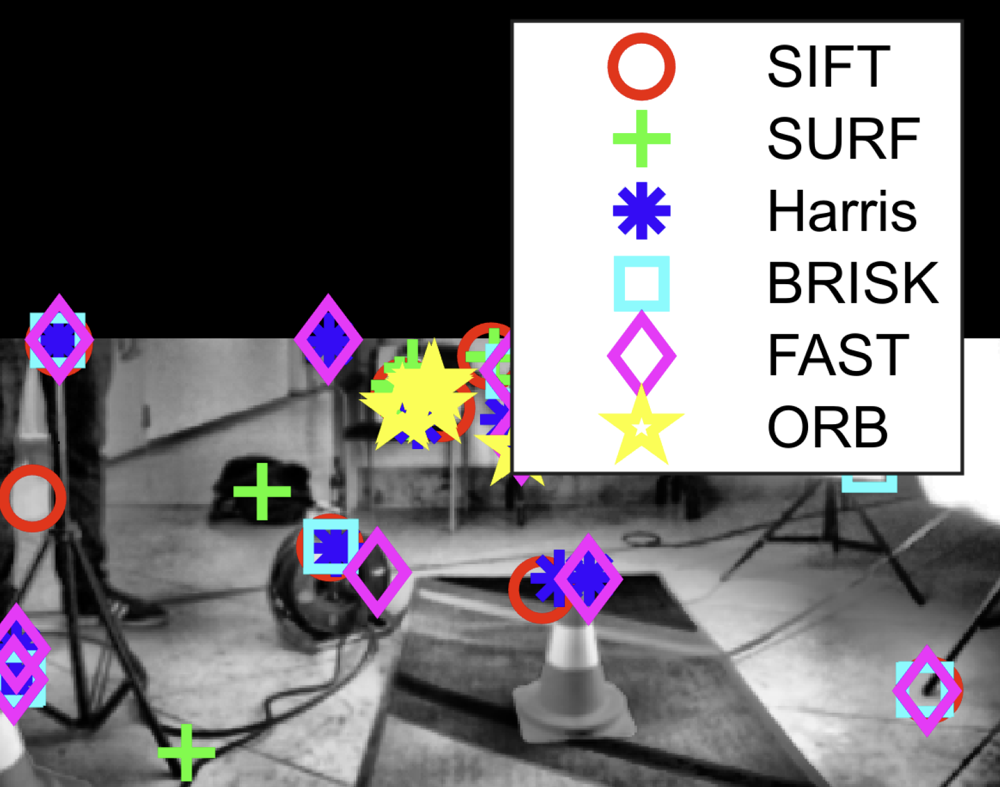
Deteção de cones usando apenas métodos tradicionais de visão computação. (Sem auxílio de Machine Learning)
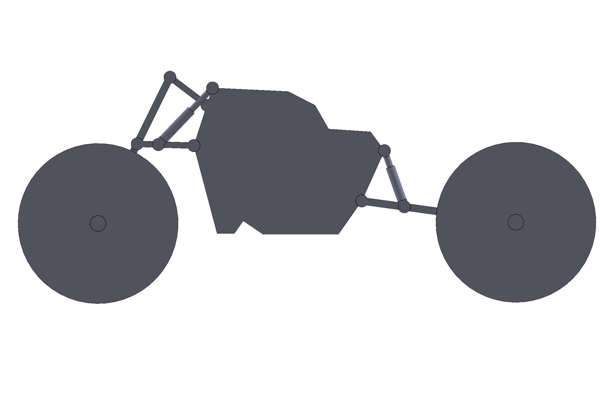
Simulação e animação 2D de um sistema de suspensão de mota em diversas situações do dia a dia de modo a projetar uma mota.
Virtual Private Server em Linux (Ubuntu) com diversos projetos realizados sendo um dos principais: Network de Jogos.
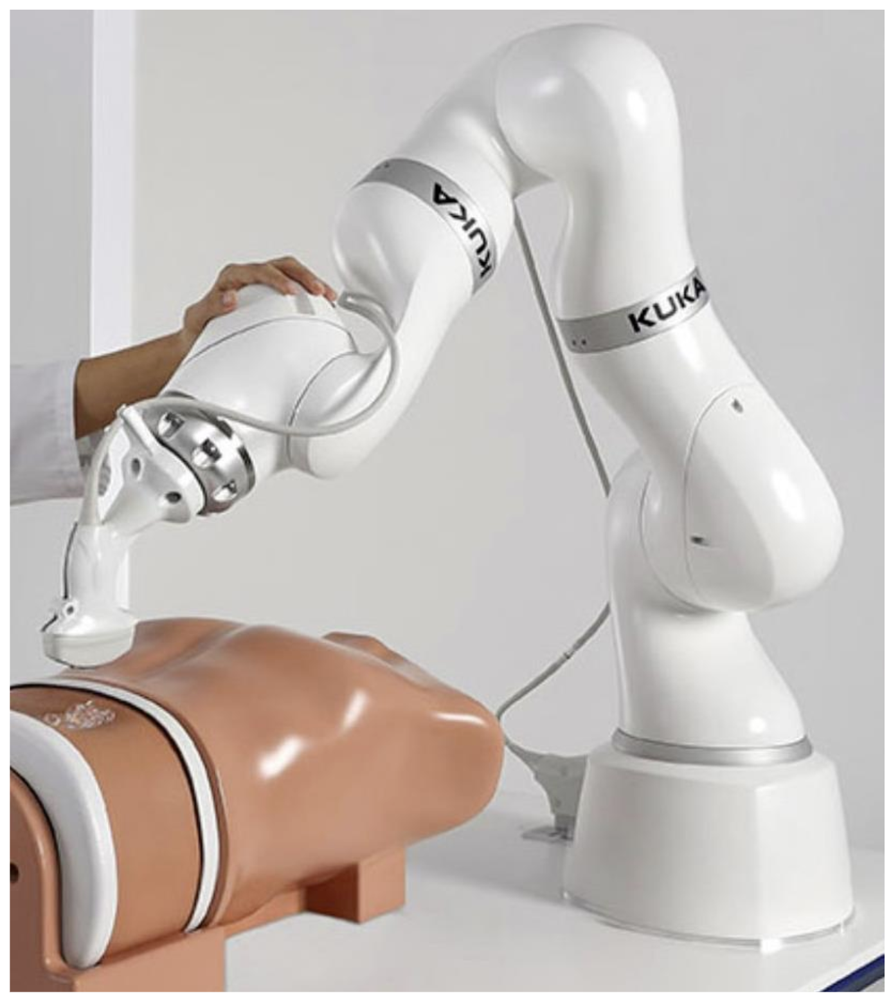
Análise cinemática e dinâmica de um manipulador cirúrgico inspirado no modelo KUKA LBR MED.